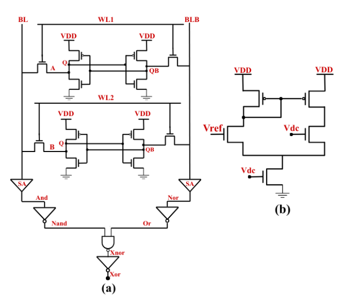
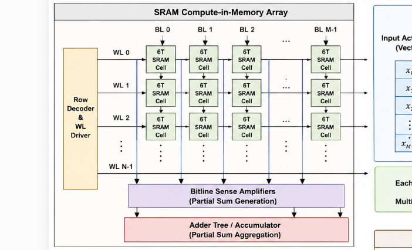
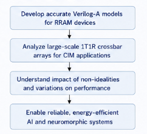
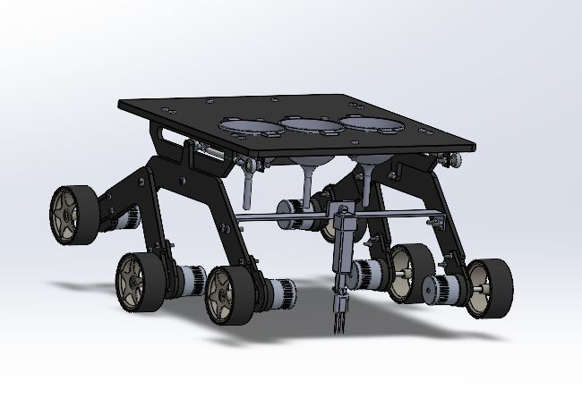
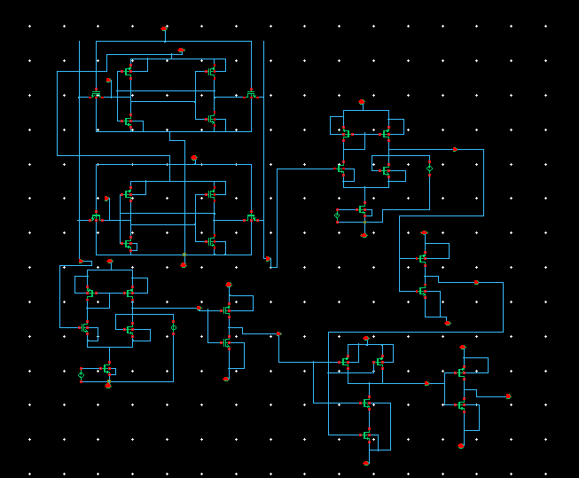
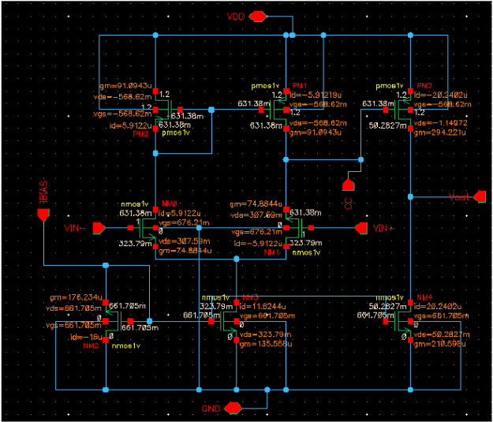
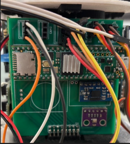
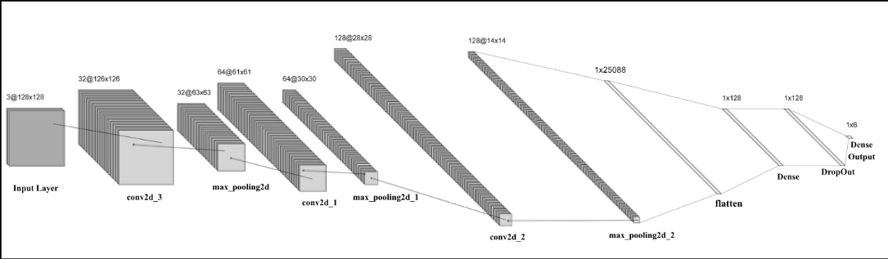
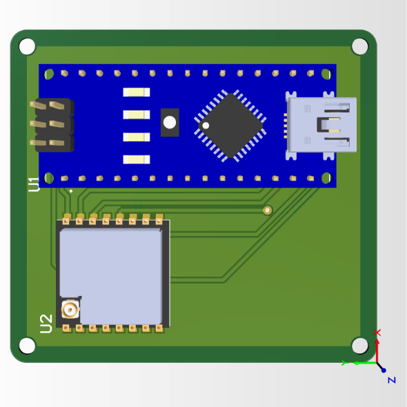

I am an undergraduate Electrical and Electronic Engineering student at BRAC University with a growing research focus on memory-centric AI hardware, compute-in-memory architectures, and neuromorphic systems. My work bridges circuit-level design, emerging memory technologies, and intelligent hardware acceleration for future energy-efficient computing systems. Alongside academic research, I actively lead multidisciplinary engineering teams, mentor students, and contribute to international engineering competitions that integrate communication systems, embedded hardware, and aerospace applications.
Compute-in-Memory
Neuromorphic Computing
Emerging Memory Devices
Memory-Centric Architectures
VLSI Design
Hardware Accelerators
My research interests lie at the intersection of memory and computation, with a primary focus on designing efficient hardware architectures for next-generation artificial intelligence systems. I am particularly interested in Compute-in-Memory (CiM), Neuromorphic Computing, Emerging Memory Devices, and Memory-Centric Architectures that aim to overcome the limitations of conventional von Neumann systems. My work explores how intelligent hardware can reduce data movement, improve energy efficiency, and enable scalable AI acceleration for increasingly complex computational workloads. I am also interested in developing reliable and variation-aware hardware systems by investigating device-level characteristics, circuit architectures, and system-level performance trade-offs. Beyond my core research areas, I enjoy working on interdisciplinary engineering applications that connect artificial intelligence, embedded systems, robotics, and aerospace technologies to solve real-world challenges.
Variation-Aware SRAM Compute-in-Memory Boolean Architecture for Binary Neural Networks
H. H. Jui, M. T. A. Tonmoy, M. R. Kabbo, A. A. Mahi, N. M. Himel, S. Sultana, T. Titirsha, and T. Rahman
IEEE International Symposium on VLSI (ISVLSI), 2026. (Accepted)
This paper presents a variation-aware SRAM-based Compute-in-Memory (CIM) architecture for executing Boolean logic operations directly inside standard 6T SRAM arrays, reducing the data-transfer overhead associated with conventional von Neumann computing. The proposed design, implemented in 45 nm CMOS technology, supports multiple logic functions including AND, OR, XOR, and XNOR, with a particular focus on XNOR operations for Binary Neural Network (BNN) acceleration. Circuit-level validation is performed through Cadence simulations and 1200-point Monte Carlo analysis to characterize timing variations caused by process uncertainties. A hardware-aware BNN framework is then developed to evaluate how timing-induced XNOR errors affect MNIST digit classification accuracy. Results show that reducing the XNOR error probability from 9.5% to 0.25% improves classification accuracy from 58.27% to 89.34%, demonstrating a strong relationship between circuit reliability and AI inference performance. The architecture also achieves an average energy consumption of approximately 3.17 pJ per CIM operation, corresponding to about 12.27 µJ per BNN inference. Overall, the work introduces a circuit-to-application evaluation methodology that links SRAM-CIM timing variability with neural network accuracy, providing valuable insights for designing reliable and energy-efficient AI hardware.

Designing a scalable SRAM-based Compute-in-Memory (CIM) accelerator to enable energy-efficient multiply–accumulate (MAC) operations for deep neural network inference. The research focuses on developing CIM-enabled SRAM architectures capable of performing arithmetic operations directly within memory arrays, thereby minimizing data movement between memory and processing units. Current work includes the design and simulation of SRAM compute cells, bitline computing mechanisms, differential sensing circuits, accumulation architectures, and peripheral control logic using Cadence Virtuoso in a 45 nm CMOS technology environment. The project investigates the implementation of matrix-vector multiplication and MAC operations within SRAM arrays, which form the computational backbone of modern machine learning workloads. Particular emphasis is placed on evaluating circuit-level performance metrics such as latency, energy consumption, sensing accuracy, and robustness under process variations. Monte Carlo simulations are being conducted to analyze the impact of transistor-level variability on computational accuracy and timing reliability. In addition, hardware-aware evaluation methodologies are being developed to study the influence of circuit non-idealities on neural network inference performance. The long-term goal is to establish a reliable and scalable SRAM-CIM framework that bridges circuit design and AI application requirements while achieving significant improvements in energy efficiency and computational throughput for edge and embedded intelligence systems.

Conducting research on Resistive Random-Access Memory (RRAM)-based Compute-in-Memory architectures with a focus on device modeling, circuit design, and system-level evaluation. The project involves developing compact behavioral models of RRAM devices using Verilog-A to accurately capture resistance switching dynamics, filament formation mechanisms, nonlinearity, device variability, and SET/RESET operations. These models are being integrated into circuit simulation environments to facilitate accurate analysis of large-scale memory arrays and compute-in-memory systems. The research further explores 1T1R and crossbar-based RRAM architectures for accelerating machine learning and neuromorphic computing workloads. Current investigations include the analysis of sneak-path currents, programming reliability, read/write disturbances, endurance limitations, and variability-aware design methodologies. Large-scale crossbar arrays are being evaluated for in-memory vector-matrix multiplication, which is a fundamental operation in artificial intelligence accelerators. The project also studies the impact of device-level non-idealities on circuit functionality and application-level accuracy, aiming to develop cross-layer evaluation frameworks that connect device physics, circuit performance, and AI system behavior. The ultimate objective is to contribute toward next-generation memory-centric computing platforms that combine high computational density, low power consumption, and efficient support for data-intensive artificial intelligence applications.

Developing an autonomous agricultural rover designed to support precision farming through intelligent soil monitoring, data-driven decision-making, and site-specific fertilizer management. The system aims to automate field inspection and nutrient assessment by integrating autonomous navigation, environmental sensing, and robotic control technologies into a single platform. The rover is being designed to operate in grid-based agricultural environments, where it autonomously traverses predefined paths, collects soil data from multiple sampling locations, and generates spatial nutrient distribution maps. Current research focuses on the integration of NPK (Nitrogen, Phosphorus, Potassium) sensing modules, GPS-assisted localization, path-planning algorithms, obstacle avoidance mechanisms, and embedded control systems for autonomous operation. Sensor data are processed to identify nutrient deficiencies and support zone-specific fertilizer recommendations, enabling more efficient and sustainable agricultural practices. The project also investigates motion planning, coverage optimization, and navigation reliability in uneven field environments. Simulation-based testing is being conducted using robotic simulation platforms to evaluate localization accuracy, route efficiency, sampling coverage, and system robustness under different operating conditions. Future development includes the integration of machine learning techniques for crop-health assessment, adaptive path planning, and real-time decision support for precision agriculture applications. The long-term objective is to develop a low-cost, scalable, and autonomous agricultural robotics platform capable of reducing fertilizer waste, improving crop productivity, and supporting data-driven farming practices in resource-constrained agricultural regions.

Designed and simulated a 45 nm 6T SRAM-based compute-in-memory (CIM) architecture in Cadence Virtuoso for inmemory Boolean computation. Implemented AND, OR, NAND, NOR, XOR, and XNOR operations and performed Monte Carlo simulations to quantify the impact of process variations on delay and logic reliability. Developed a Python/PyTorch-based evaluation framework to investigate the relationship between circuit-level timing variations and binary neural network inference accuracy

Designed and simulated a two-stage CMOS operational amplifier in 45 nm GPDK technology using Cadence Virtuoso. Performed transistor-level sizing, DC operating-point analysis, AC frequency response characterization, stability assessment, and transient simulations to evaluate gain, bandwidth, phase margin, slew rate, and power consumption.

Contributed to the communication subsystem of BRACU Diganta, a global finalist in the CanSat Competition 2025 (Virginia, USA). Designed ground-station antennas, integrated XBee telemetry links, conducted link-budget analysis, and developed aerodynamic and auto-gyro descent models. Currently serving as Project Manager, leading the team and overseeing communication subsystem development for the Teknofest 2026 Model Satellite Competition.

Developed and optimized CNN-based image classification models for automated detection of six categories of floating aquatic waste. Conducted data preprocessing, augmentation, training, and performance evaluation to support autonomous environmental monitoring systems.

Developed a LoRa based ground station for an educational satellite platform for real-time telemetry reception, decoding, and visualization through an Arduino Nano. Implemented communication protocols and packet handling for satellite-to-ground link demonstrations.
Cadence Virtuoso • Cadence Maestro • Cadence Innovus • Spectre • PSpice • Quartus • Xilinx • Altium Designer
Python • PyTorch • MATLAB • C • C++ • Embedded C • Verilog • SystemVerilog • VHDL • Verilog-A
ESP32 • Arduino • XBee • LoRa Modules • Telemetry Systems • Real-Time Data Acquisition
ROS2 • Webots • Gazebo • Fusion 360 • AutoCAD